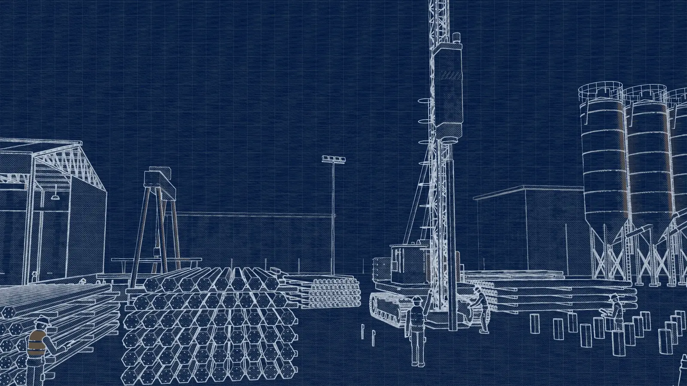
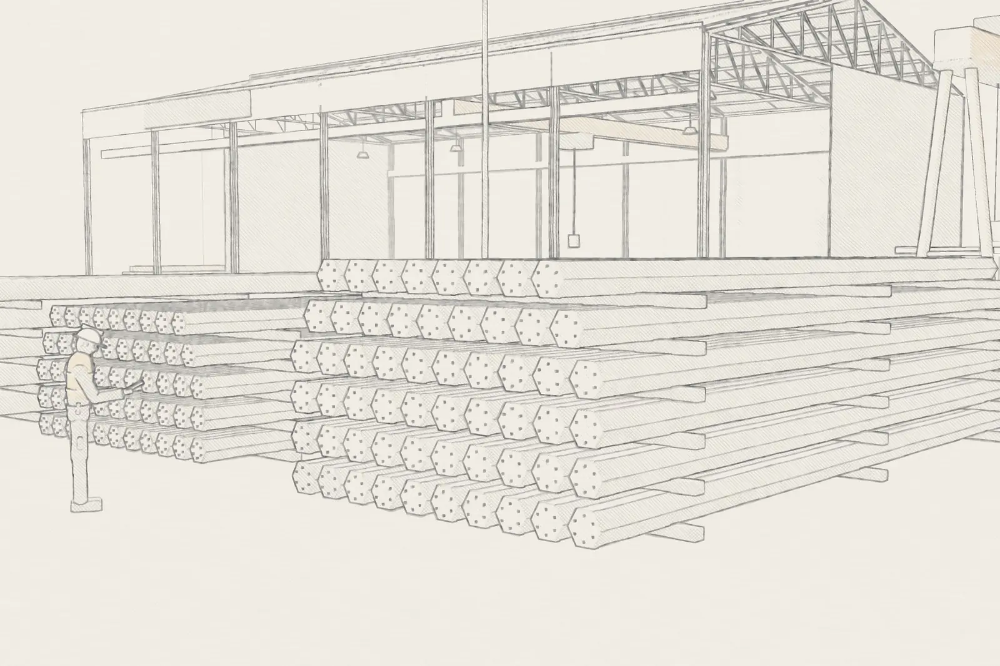
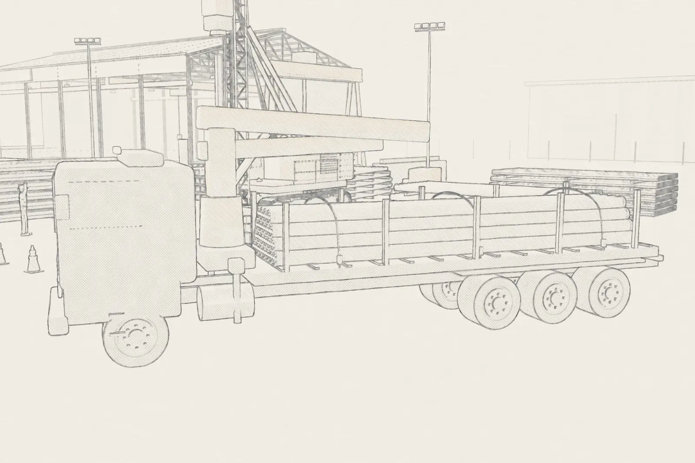
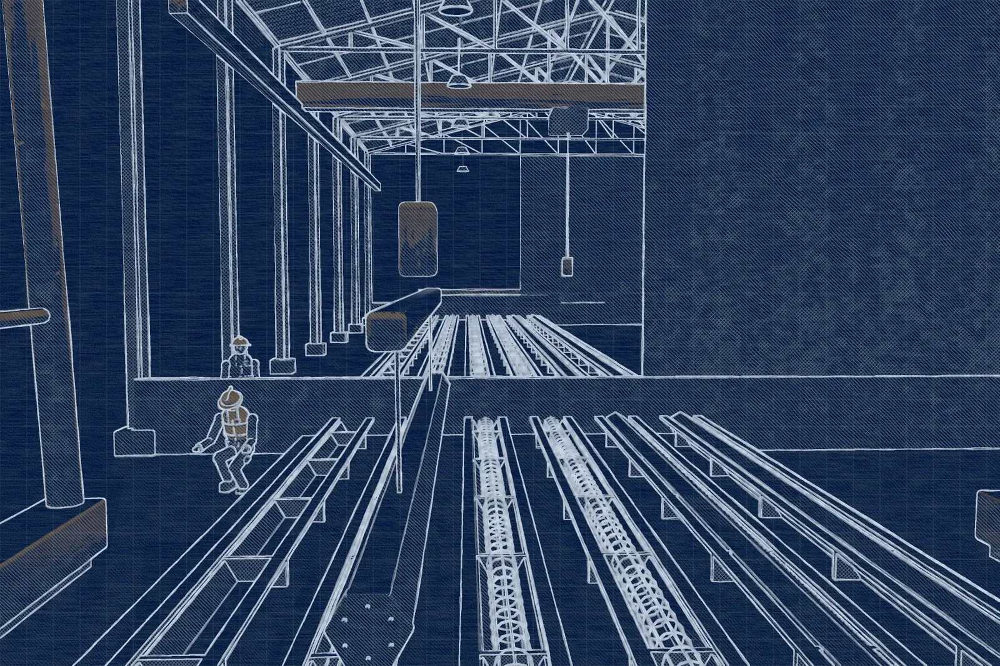
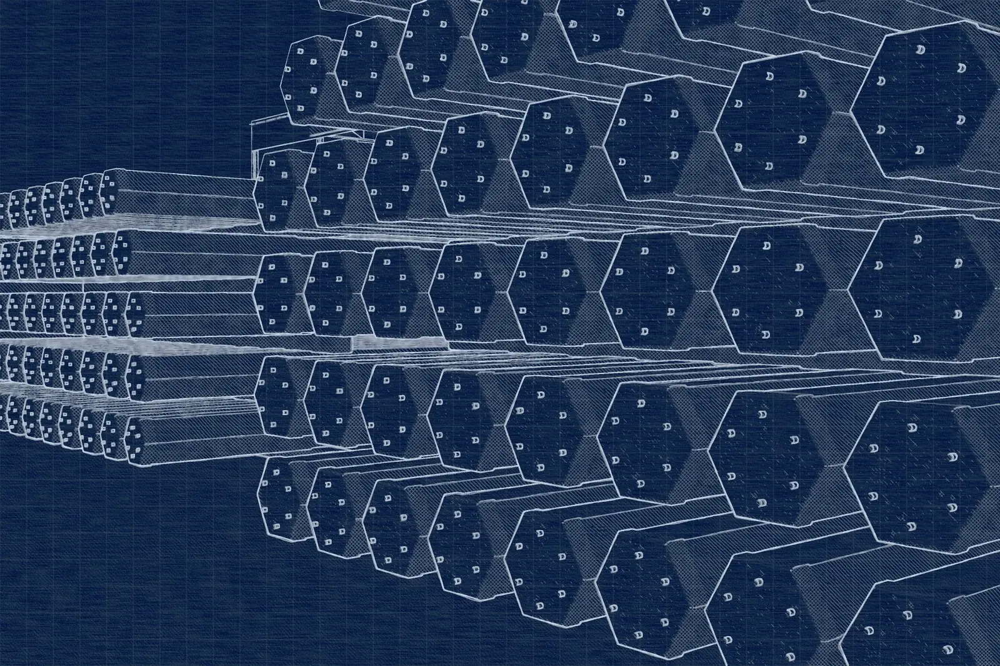
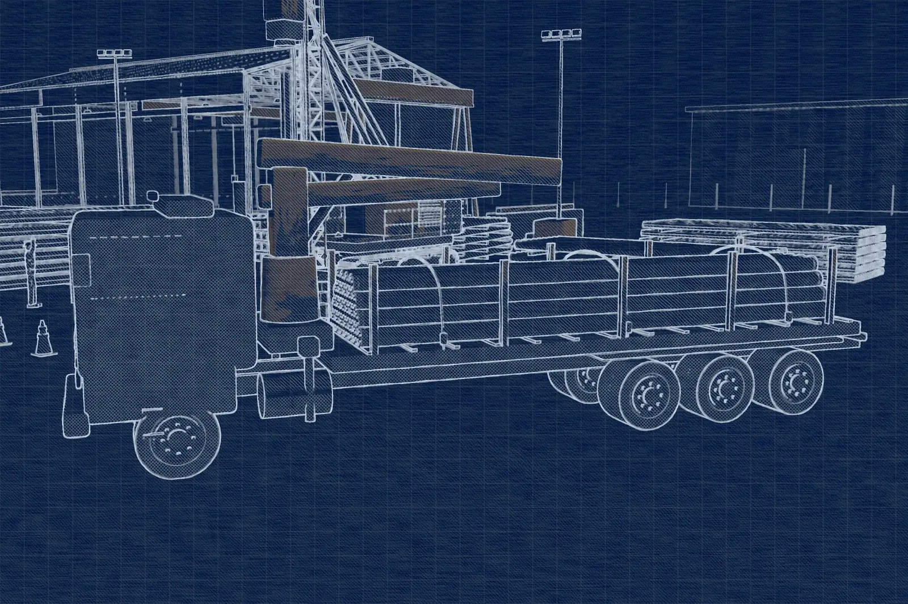

Infraestrutura industrial
Unidades fabris e complexos logísticos com grandes áreas e cargas concentradas.

IPR · Estacas pré-fabricadas de concreto
Fabricação e cravação de estacas protendidas com controle industrial do insumo à nega. Tradição técnica e tecnologia para sustentar projetos de alta complexidade em todo o território nacional.
Seja bem-vindo
Com 35 anos de experiência consolidada no mercado, a IPR é referência na fabricação e cravação de estacas pré-fabricadas de concreto.
Unimos tradição técnica e inovação tecnológica para entregar soluções de infraestrutura que garantem a sustentação de projetos de alta complexidade. Atendemos clientes públicos e privados, do projeto à cravação, com equipe própria e rastreabilidade total.


Unidades fabris e complexos logísticos com grandes áreas e cargas concentradas.
Empreendimentos residenciais e comerciais com cronograma e canteiro enxutos.
Pontes, viadutos, portos e linhas de transmissão em solos e acessos exigentes.
§ 02 — Processo de cravação
O bate-estacas é posicionado sobre o ponto locado em projeto. A estaca é içada e aprumada na torre-guia, garantindo a verticalidade antes do primeiro golpe.
O martelo aplica golpes sucessivos e a estaca avança pelas camadas do solo. Sem escavação: não há retirada de terra, lama bentonítica nem sobra de concreto no canteiro.
Para profundidades maiores que 10 m, um novo segmento é posicionado e unido por solda nos anéis de emenda de alta precisão, mantendo a continuidade estrutural.
A penetração final para um número determinado de golpes — a nega — e o repique elástico são medidos em tempo real e confrontados com o projeto. A capacidade de carga é verificada estaca a estaca.
Por que escolher a IPR?
Do controle da matéria-prima à logística no canteiro, cada etapa é verticalizada para reduzir riscos, prazos e desperdício.
Mais de três décadas de atuação direta no setor, com acervo técnico vasto na resolução de desafios geotécnicos e na produção de elementos estruturais de alta performance.
Controle rigoroso em 100% dos processos — da matéria-prima com certificação de origem ao monitoramento laboratorial do concreto em nossa central automatizada.
Frota própria e equipes especializadas asseguram agilidade no transporte, manuseio seguro e cumprimento rigoroso dos cronogramas de execução.
O sistema pré-moldado reduz o desperdício no canteiro e oferece maior velocidade de execução, resultando em uma melhor relação custo-benefício.
Rastreabilidade total e inspeção individual de cada estaca. Soluções dimensionadas para máxima durabilidade e resistência.
Estacas protendidas
Concreto C40 e cordoalhas CP-175 protendidas, em comprimentos de 6, 8 e 10 m com anéis de emenda. Explore os ábacos e cargas no catálogo técnico.
Seção maciça de 20 a 30 cm, de 402 a 978 kN de compressão pela NBR 6118.
Ver seções Ø 17 · 21 · 28 · 33 · 40 · 45 cmMaciça de 17 a 33 cm e linha vazada 40 e 45 para cargas elevadas.
Ver seções 30 × 30 cm8 cordoalhas Ø 6 mm e 1.276 kN de compressão pela NBR 6118.
Ver seçãoCadeia produtiva
Um processo industrial documentado, que vincula cada estaca aos resultados laboratoriais do seu lote de concreto.
A cadeia de suprimentos é vinculada a fornecedores com certificação de conformidade.

Balanças de alta precisão calibradas conforme a NBR 7212 reproduzem o traço de laboratório com fidelidade em cada ciclo.

Moldes metálicos de alta precisão e cordoalhas tracionadas antes da concretagem conferem resistência à flexão e menor porosidade.
Amostras de cada concretagem são moldadas em corpos de prova cilíndricos e rompidas em idades críticas.

Após a desmoldagem, cada unidade passa por inspeção visual individual antes de ser liberada para estoque.

Veículos próprios e equipes treinadas para içamento e descarregamento preservam a integridade das peças e o cronograma da obra.
Clientes
Clientes públicos e privados em diversos segmentos. Ver todos


Orçamento técnico
Fale com nossos especialistas e solicite um orçamento técnico para o seu projeto. Envie a sondagem SPT e as cargas de projeto para agilizar a análise.